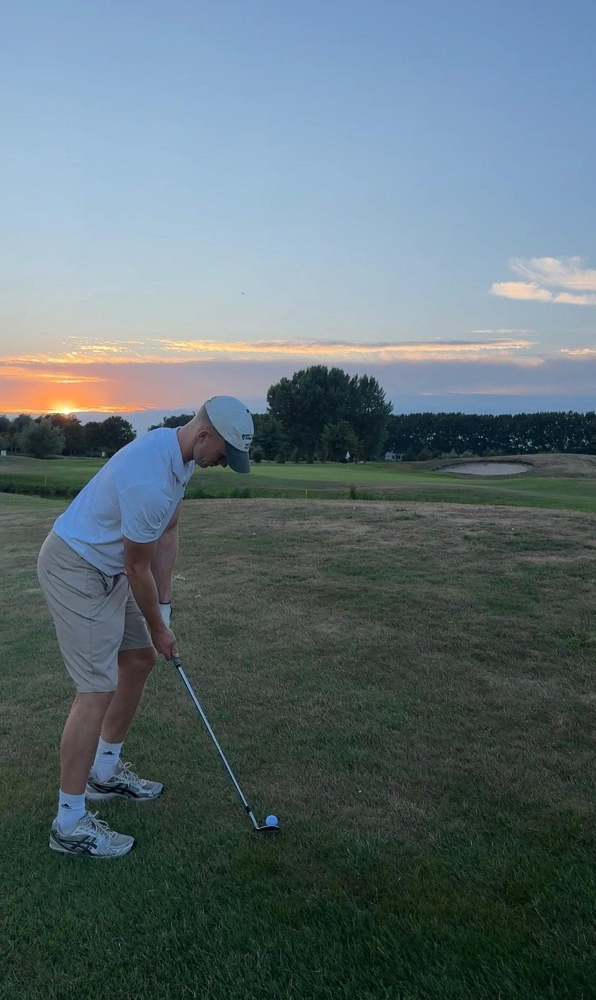

Golf
Nieuwe hobby
Hier ben ik pas sinds een paar maanden mee begonnen, maar dit vind ik zeer leuk. Dit doe ik meestal in Heiloo op zaterdag. Dan speel ik 18 holes, ben je de hele dag zoet en ben je zonder dat je heel intensief bezig bent nog steeds lekker actief.
Waarom ik het leuk vind
Een hele zaterdag buiten op de baan, rustig maar toch actief. Het spelletje speel je wel met andere maar je speelt eigenlijk tegen jezelf. Hierbij is het heel belanrijk om jezelf rustig te houden en niet te hoog in je emoties te komen. Dit lukt mij nog niet altijd maar ik hou van een uitdaging.
Waarom het bij me past
Golf is nieuw voor mij en ik vind het leuk om iets nieuws te leren en beter te worden. Wanneer je met iets nieuws begint en je dat consistent blijft doen merk je dat je er al gauw veel beter in wordt. Die leercurf vind ik leuk om te volgen omdat ik dat bijvoorbeeld mis in het hockey.